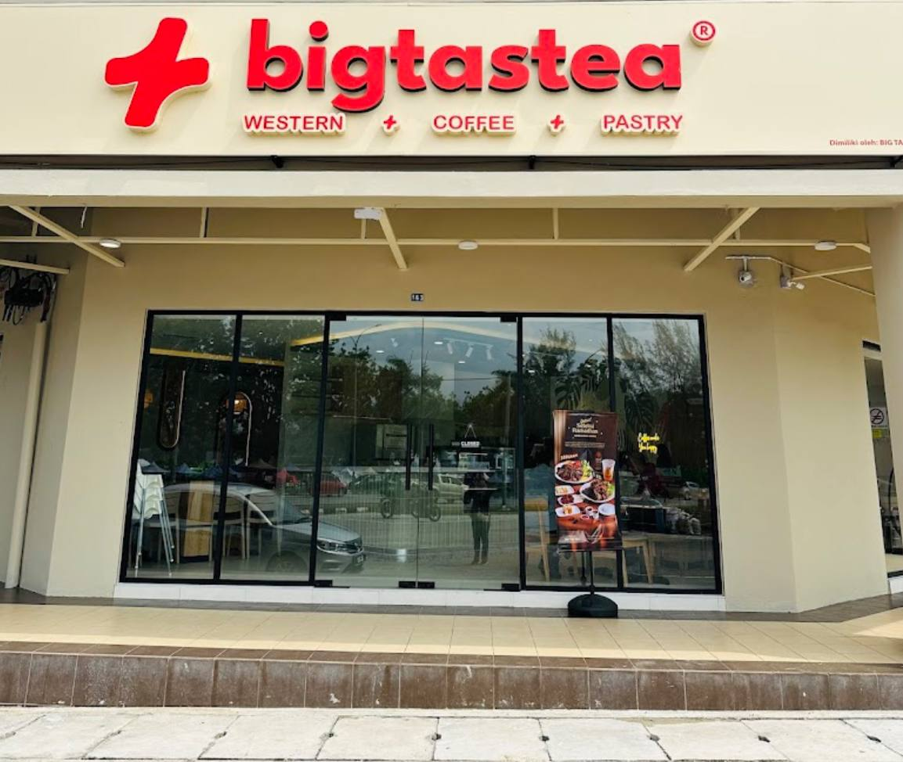

🍜 Kedah Food Trail
Big Tas Tea

Big Tas'Tea HQ is a popular café-style restaurant in Sungai Petani that offers a mix of Western and Asian cuisine in a casual dining environment.
Known for its wide menu selection, the restaurant serves grilled dishes, pasta, rice meals, snacks, desserts, and signature beverages, making it a popular gathering spot for friends and families.
Big Tas’Tea started in Sungai Petani and later expanded into a growing local food and beverage brand across Malaysia.
Restaurant Information
📍 Location: 1 & 3 ground floor, 2, Persiaran BLM 6/2 08000 Sungai Petani Kedah
🕒 Opening Hours: 12:00PM – 11:00 PM
💰 Price Range: RM20 – RM40 (per person)
⭐ Rating: 4.5 / 5
🎥 Quick Restaurant Tour
Take a quick look at the restaurant atmosphere, food presentation and dining experience.
⭐ My Review
Big Tas Tea offers a cozy atmosphere and a variety of delicious menu choices.
I especially enjoyed the food presentation and relaxing environment.